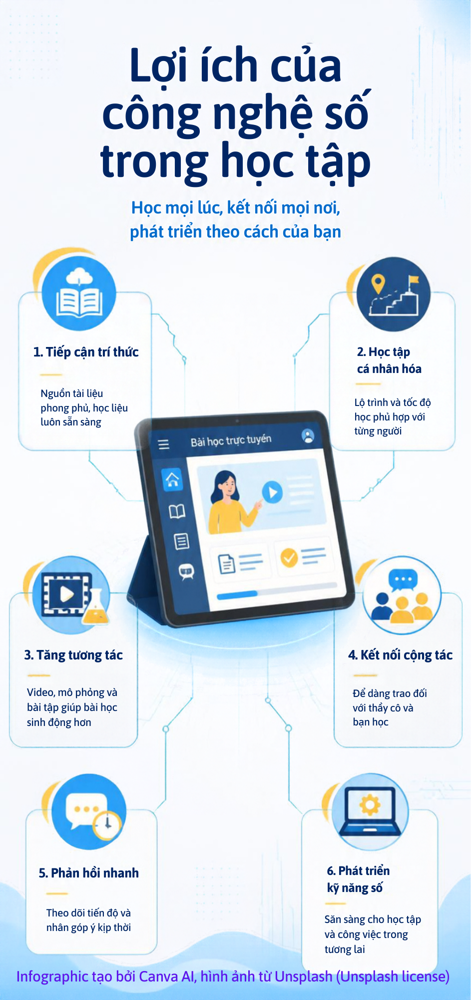

Infographic: 6 lợi ích nổi bật
Tổng quan trực quan về những cách công nghệ hỗ trợ việc học.

Học mọi lúc, kết nối mọi nơi và phát triển theo cách của bạn.
Tổng quan trực quan về những cách công nghệ hỗ trợ việc học.

Cùng tìm hiểu thêm về vai trò của công nghệ trong học tập.
Nếu video không hiển thị, xem trực tiếp trên YouTube.